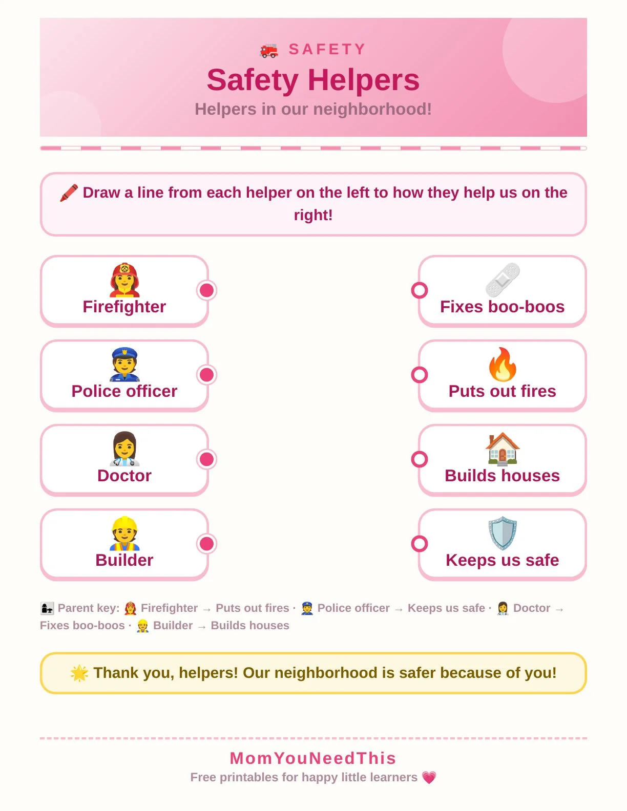

🚑 Safety Helpers Heroes In Our Community
Firefighters, doctors, police officers and more — community helpers keep us safe every day. These activities help children recognize helpers and know they can ask for help.
Quick Answer
This free printable safety helpers activity helps toddlers and preschoolers (ages 2–5) recognize the community helpers who keep us safe — firefighters, doctors and nurses, police officers, crossing guards, lifeguards — and match each helper to their job, their uniform and their tools. Kids also learn the emergency number (911) and rehearse what to say when asking a helper for help. Download and print at home with no signup needed.
At a Glance
- Ages: Toddlers and preschoolers (ages 2–5)
- Activity: Matching community helpers to their jobs; learning emergency numbers
- Skills: Safety knowledge and helper recognition
- Format: Printable worksheet (PDF)
- Cost: Free, no signup
The real goal is not the matching — it is the rehearsal. A lost or frightened child who can walk up to a firefighter and say “I'm lost, my name is…, please help me” has a skill worth more than every other page on this site combined. These activities build it the way children learn everything: by naming, matching, and practicing out loud while it is still a game.
🚑 Explore Safety Helpers
Match helpers to their jobs, learn emergency numbers, and discover how helpers keep us safe.
💡 How To Use This Activity
Print the helper pages and give them real faces: the crossing guard on your street, your family doctor, the firefighters at your local station. Then rehearse, out loud, what your child would actually say when asking one of these helpers for help. The print button opens the full-size page in a new tab if you prefer to print from there.

🖨️ Download Your Free Safety Helpers Printable
Match helpers to their jobs, learn emergency numbers, and discover how helpers keep us safe. Print it out, grab the crayons, and you're ready — no signup needed.
⬇️ Download Free Printable 🖨️ Print🎁 Free printable for toddlers & preschoolers
🚑 Meet The Helpers — Who Does What
Firefighters put out fires and rescue people from them — and also answer car accidents, flooded basements and cats of unusual stubbornness. Recognize them by the heavy coat, helmet, and the truck with the ladder. A firefighter in full gear with a mask can look frightening; teach your child the sentence firefighters themselves teach: “Under the mask is a helper — if you are hiding from a fire, never hide from us.”
Doctors and nurses fix bodies and keep them fixed: checkups, vaccines, stitches, casts. Their tools — stethoscope, thermometer, bandages — are worth naming on the page so the real ones feel familiar at the real visit.
Police officers keep order in public places and are the helpers to find at parades, fairs and busy streets. Crossing guards own one small, vital kingdom: the crosswalk, where their sign and vest outrank every car.
Lifeguards watch water so swimmers can play; their whistle means “look at me, instructions coming.” And teachers, librarians and cashiers are the everyday helpers — the ones a separated child is most likely to actually find, which is why the plan is: find a grown-up with a name tag, a uniform, or children of their own, and say the rehearsed sentence.
❓ Safety Helpers FAQs
What activities are included in Safety Helpers?
This page collects our free safety helpers printables in one place: matching helpers to their jobs (firefighters, doctors, police, crossing guards, lifeguards), learning the emergency number 911, and discovering how helpers keep us safe. Download the printable below and start learning right away.
Are these activities really free?
Yes — every printable on MomYouNeedThis is 100% free to download and print. No signup, no payment, just tap the download button. The most valuable supply for this set is not a crayon — it is thirty seconds of rehearsal, out loud, in the kitchen. The most valuable supply for this set is not a crayon — it is thirty seconds of rehearsal, out loud, in the kitchen.
How do I use these activities with my child?
Print the helper pages and give them real faces: the crossing guard on your street, your family doctor, the firefighters at your local station. Then rehearse, out loud, what your child would actually say when asking one of these helpers for help — name, what happened, what they need. Practice it like a fire drill: cheerfully, briefly, and more than once.